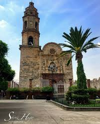

-Virgen de Guadalupe: Se celebran del 1 al 12 de diciembre.
- Fiestas Patronales en honor a San Felipe: Se realizan del 3 al 11 de mayo.
- Semana Santa y Pascua: Son celebraciones importantes que incluyen procesiones y actividades religiosas.
-Romeria del Señor de Teponahuasco: se realiza del.
-Caminata de las Cruces hasta el Templo de San Felipe Apostol:se realiza en Junio.
-Visitar al señor de Teponahuasco cada viernes.
-Partir la Rosca de Reyes en la Plaza Principal de Cuquio.
-Dar la vuelta por el pueblo y plaza